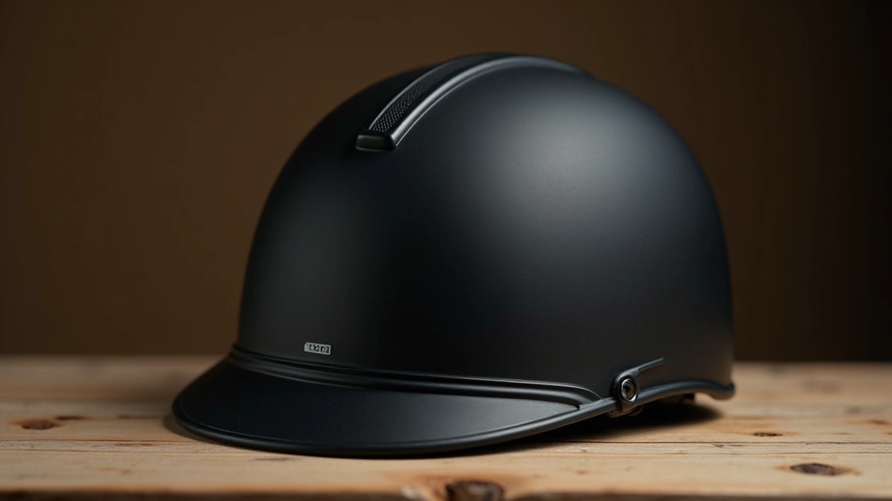
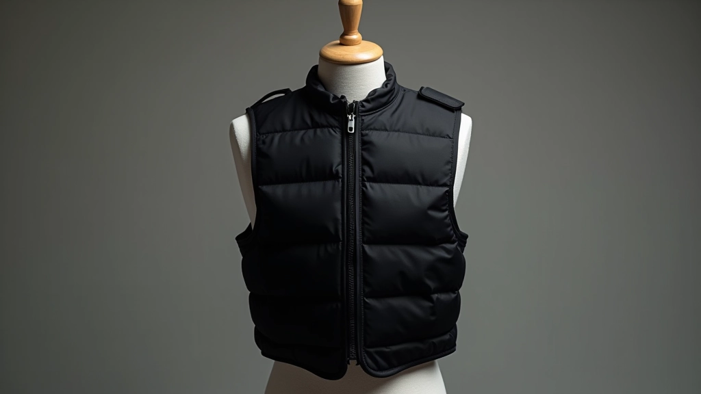
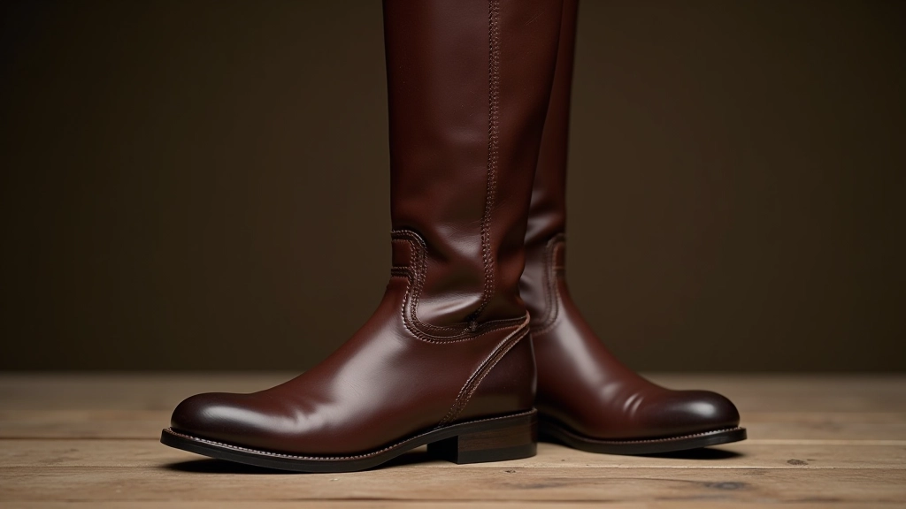
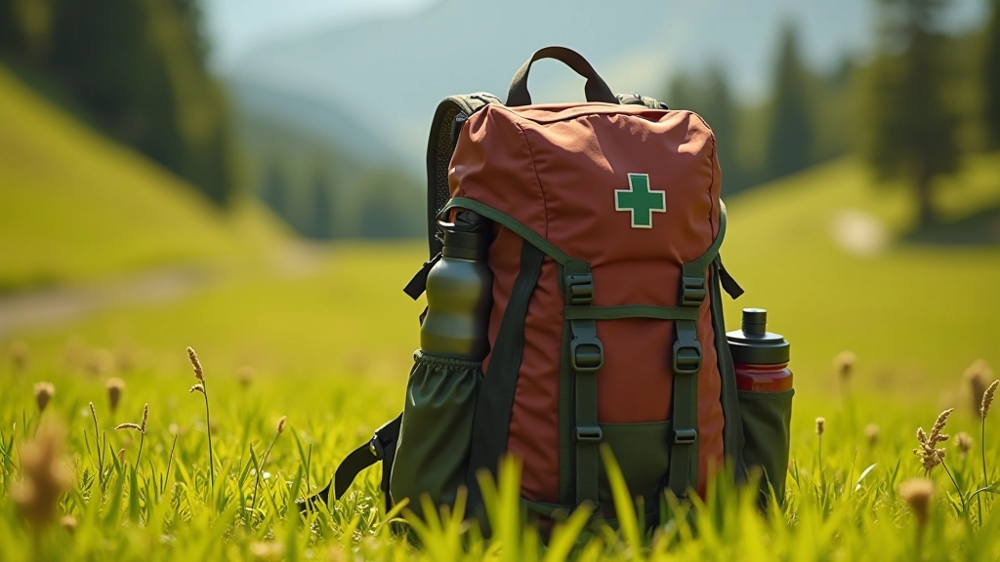

تحضير الحصان والفارس قبل المسارات الطويلة
خطوات عملية لتهيئة حصانك وتجهيز نفسك قبل رحلة طويلة. يشمل الفحوصات الأساسية والتمارين التحضيرية.
قائمة شاملة بالمعدات التي لا غنى عنها لكل رحلة. من خوذات الحماية إلى حقائب الطوارئ والمياه والملابس المناسبة. كل عنصر له دور محدد في ضمان سلامتك وراحتك أثناء الركوب عبر المسارات الطبيعية.


كتبه فريق طريق الخيل التحريري، متخصص في تقديم إرشادات عملية وموثوقة عن ركوب الخيل عبر المسارات الطبيعية.
الركوب عبر المسارات الطبيعية ليس مجرد جلوس على الحصان والانطلاق. إنه نشاط يتطلب تحضيراً حقيقياً وفهماً واضحاً لما تحتاجه. المعدات الصحيحة لا تحميك فقط من الإصابات — بل تجعل الرحلة أكثر راحة وتركيزاً.
ستجد هنا كل شيء تحتاجه، من الخوذة إلى حقيبة الطوارئ، مع شرح واضح لماذا كل عنصر مهم. لا توجد "معدات اختيارية" — كل شيء هنا ضروري فعلاً.
الخوذة ليست اختياراً. نقطة. إذا كنت ستركب حصاناً على أي مسار، تحتاج إلى خوذة معتمدة من معايير السلامة الدولية — يفضل معيار AS/NZS 3838 أو ASTM F1163. هذه المعايير تعني أن الخوذة اختبرت بشكل حقيقي وتوفر حماية فعلية.
اختر خوذة مريحة تناسب رأسك بشكل محكم. يجب أن تشعر أنها موجودة لكن لا تضغط. الخوذ الرخيصة جداً غالباً تكون غير مريحة وثقيلة. استثمر في خوذة جيدة — تستخدمها لسنوات.


سترة الحماية تحمي ظهرك وصدرك من السقوط. نعم، قد تسقط. كل من يركب حصاناً سقط في النهاية. الفرق أنك إذا كنت ترتدي سترة حماية معتمدة، السقطة قد تكون مؤلمة لكن لن تكون خطيرة.
اختر سترة مناسبة لحجمك — لا تكون ضيقة جداً لأنها ستقيد حركتك، ولا فضفاضة جداً لأنها لن توفر حماية حقيقية. السترات الحديثة خفيفة وتنفس جيداً، لذا لا تخافي من الحرارة حتى في الطقس الدافئ.
لا تركب بأي حذاء عادي. تحتاج إلى حذاء ركوب حقيقي له كعب محدد (حوالي 2-3 سنتيمتر) يمنع قدمك من الانزلاق في الركاب. الحذاء يجب أن يكون مريحاً لأنك ستقضي ساعات بداخله.
بخصوص الملابس — ارتدِ طبقات. الطبقة الأولى: ملابس ماصة للعرق (بولي استر أو صوف ميرينو). الطبقة الثانية: بنطال ركوب من القطن أو الدنيم. الطبقة الثالثة: سترة أو معطف حسب الطقس. في الشتاء أضف قفازات وقبعة. في الصيف ارتدِ بنطالاً فاتح اللون وقميصاً بأكمام طويلة — حتى لو كان الطقس حاراً.


كل رحلة ركوب تحتاج إلى حقيبة ظهر بسيطة بها: زجاجة ماء (على الأقل لتر واحد)، حقيبة إسعافات أولية صغيرة، مناديل ورقية، وشيء خفيف للأكل (تفاح، تمر، بسكويت). لا تحتاج إلى حقيبة ضخمة — حقيبة ظهر بـ 15-20 لتر تكفي تماماً.
حقيبة الإسعافات الأولية يجب أن تحتوي على: شاش معقم، لاصق طبي، مطهر، مسكنات ألم بسيطة، ضماد مرن. في المسارات الطويلة (أكثر من ساعتين)، أضف خريطة المسار وهاتفك محمول في حقيبة مقاومة للماء.
أضف نظارات شمسية بعدسات ملتصقة بالرأس (لا تسقط)، كريم حماية من الشمس، وغطاء رأس إضافي تحت الخوذة. احذر من الرياح القوية التي قد ترفع الغطاء.
احمِ وجهك من الأغصان — نظارات واقية اختيارية لكن مفيدة جداً. أضف كشاف صغير إذا كنت ستركب عند الغروب. ارتدِ ألواناً فاتحة حتى تكون مرئياً بسهولة.
احضر أحذية قابلة للغسل والتنظيف بسهولة. أضف ملابس إضافية لتغييرها بعد الرحلة. احذر من انزلاق الحصان — تحرك ببطء في الطين.
ارتدِ ملابس طبقات إضافية — الجبل بارد حتى في الصيف. احمل معك مزيد من الماء (1.5-2 لتر). قفازات دافئة ضرورية حتى في الفصول الدافئة.
التجهيزات الصحيحة ليست رفاهية — هي أساس تجربة ركوب آمنة وممتعة. تحتاج إلى خوذة معتمدة، سترة حماية، أحذية مناسبة، ملابس طبقية، وحقيبة طوارئ بسيطة. هذا هو الحد الأدنى.
الاستثمار الأولي قد يبدو مرتفعاً قليلاً، لكنه استثمار تستخدمه لسنوات. خوذة جيدة تستمر 5-7 سنوات. سترة الحماية تستمر أطول. أحذية ركوب جيدة تستمر حتى 10 سنوات إذا اعتنيت بها.
"الفارس الذكي لا يختبر حظه — يختبر معداته أولاً."
ابدأ برحلات قصيرة بمعداتك الجديدة. اشعر بالفرق. ستلاحظ أنك أكثر تركيزاً على الركوب وأقل قلقاً بشأن السلامة. هذا هو الفرق بين ركوب عشوائي وركوب حقيقي.
اختر نشاطات تناسب مستوى لياقتك البدنية والخبرة. تحقق من الظروف المحلية والطقس قبل كل رحلة. إذا كان لديك أي مخاوف صحية، استشر طبيبك قبل البدء برياضة جديدة. الركوب نشاط بدني يتطلب توازناً وقوة — لا تبالغ في قدراتك.
خطوات عملية لتهيئة حصانك وتجهيز نفسك قبل رحلة طويلة. يشمل الفحوصات الأساسية والتمارين التحضيرية.

كيفية تقييم صعوبة المسار وتضاريسه قبل الانطلاق. معايير اختيار المسار حسب خبرتك ومستواك.

كل ما تحتاج معرفته عند الركوب مع مجموعات أخرى. قواعد المسافات الآمنة والتواصل والاحترام.